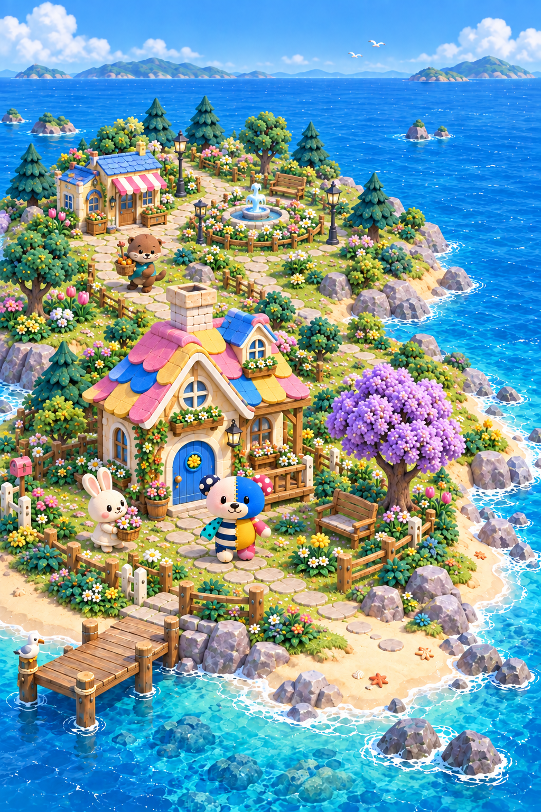

ぽこもこ｜家から広がる島POKOMOKO · GROWTH KEY VISUAL · V1
自分の家から、豊かな島へ。
ぽこもこと暮らす家を中心に、庭、ご近所、島全体が育っていく。
生成したコンセプト。実際のアプリ画面ではありません。画像を選ぶと原寸で開きます。
 01 最初の家と庭
01 最初の家と庭小さな家、紫の木、いつもの桟橋。ここから積み重ねが始まる。

02 ご近所ができる家にテラスが付き、店と広場へ道がつながる。住民が品物を運ぶ。
 03 大きく発展した島
03 大きく発展した島温室のある家から、工房、港、天文台へ。島が育っても家が中心。